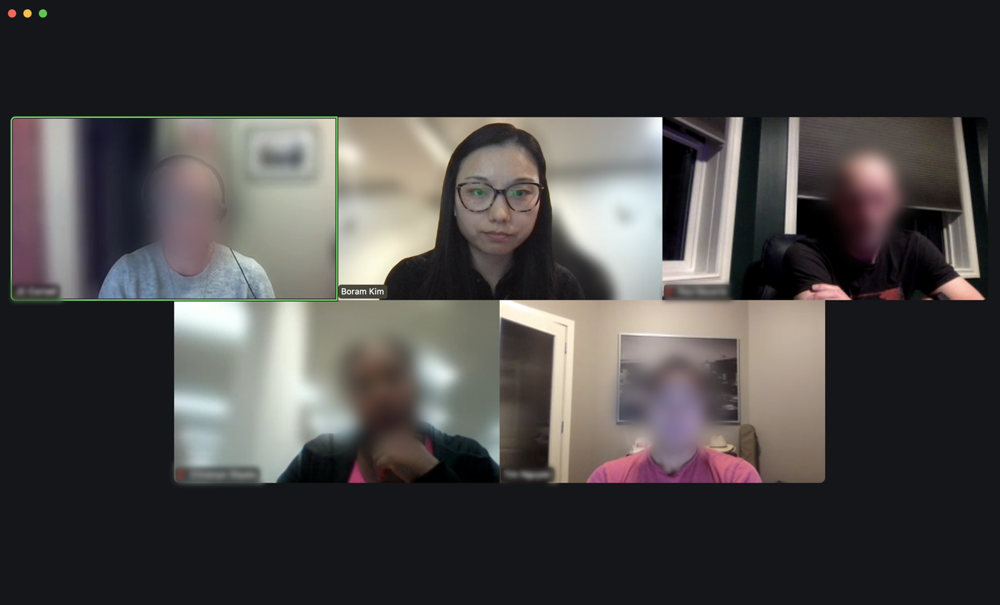
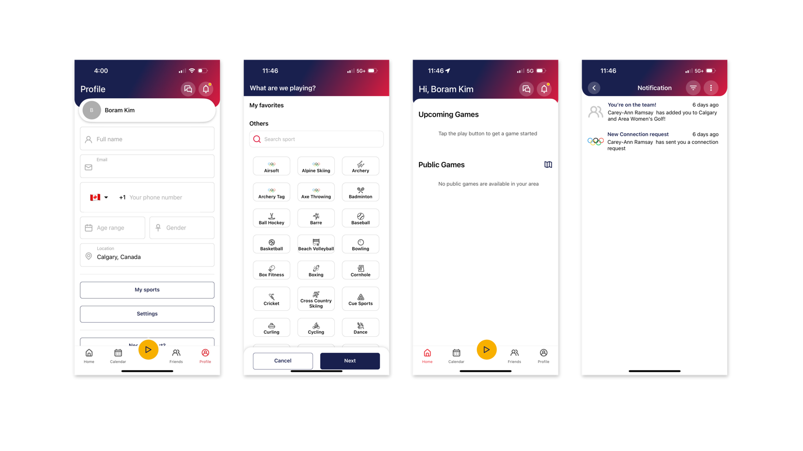
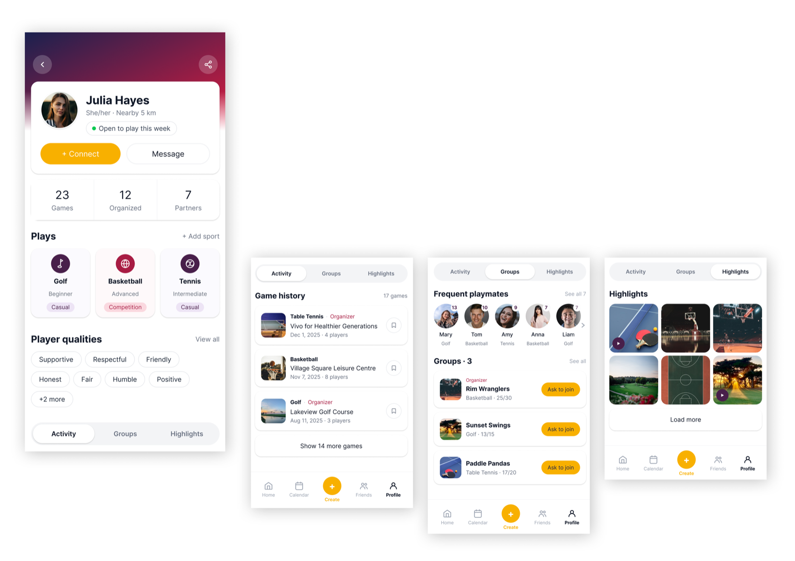

Turning two thousand sign-ups into a community
Cudagra is a sports app where you find a local game and join strangers on the court. Making it easy to see who those strangers are, and to trust them enough to show up, is what turns sign-ups into a community and a weekly habit.

2,000 people had signed up. Almost nobody was playing.
Over its first year Cudagra had gained enough users to fill courts across Calgary, and had partnered with major venues to host them. But people were hesitant to invite someone they didn't know, or to join a game full of strangers, so the games never got arranged.

Our goal was to lift daily activity by 25%, and the team had four ideas about what was holding it back.
All four were about numbers or technical issues, so we started by checking whether the real problem was on that list.
What already existed, and what people actually said
What the app looked like when we started

Seven users told us the blocker wasn't on our list
The Cudagra team recruited seven active users quickly, and the project manager and I ran each interview online for 20 to 30 minutes. Almost everyone wanted to use the app more than they did, so the sessions filled up with the needs and pain points standing in the way.
"I am not sure who else is using it."
"An easier way to see your groups, teams, and friends."
"As an introvert, it is helpful to see who is playing."
"Knowing the age group matters, especially for hockey."
"Profiles and ratings would help with unfamiliar people."
"Are you going to be fun, and are you going to be fast?"
"Skill matters. Novice vs expert might not be fun."
"If my friend is cool to golf with, I trust their pick."
The bottom line was that nobody cared how many games or players were on there. They were closing the app before they ever got as far as searching for a game or sending an invite, because they couldn't tell whether these people would give them a game worth showing up for.
Not a technical fix, but a question of how people approach each other
There was a critical gap in the information people needed to connect with others through sports. A game can be just as fun or just as boring as the people you're playing with, and no one wants to risk wasting precious playing time on the wrong match. Once we saw it that way, the question we were designing for changed:
How might we build enough trust for someone to play beyond their own social circle?
The profile is where a community starts
The profile does two jobs at once. It tells you enough about a stranger to make the first message easy. And the games and groups someone has joined give you a hint of what else is out there, a nudge to look past your own search.

Giving people enough to go on before they connect
Everyone we interviewed arrived with a wish list of what they wanted to know about a stranger. Some of it was factual, like the level they play at and the sports they play, and some of it was contextual, like what they are actually like on the court and who else has played with them. The profile's job became carrying all of it, so people have enough to go on before they ever send a message.
Sports information
The first thing every user checked when deciding who to play with. Each sport carries a level and an intent, casual or competition, so two people can tell whether they are after the same kind of game before either of them commits an afternoon to it.
Player qualities
The other thing people wanted settled before hitting invite was whether this would be good company. Players submit qualities for each other after every game, so what you read comes from people who have actually shared a court with them.
Frequent playmates
Facts and other people's opinions still leave a gap if you don't know who gave them. Mutual connections close it: tapping Frequent Playmates shows who you both play with, and how often. Spotting a single name you recognise makes the whole thing feel less like messaging a stranger.
Highlights
A short, social feed of recent games gives context nothing else on the profile can: who this person is when they are playing, rather than how they describe themselves. It also gives people a reason to open the app after a game and not only before one, and to share the fun of it with the people they played with.
Inviting goes both ways
In the current version, only the host can invite people to a game. The hosts we interviewed said they only invited from their own social circles, because they had no basis for picking anyone else. But Cudagra's value is building a sports community out of those circles, and that only happens if interest can travel in the other direction too.
Ask to join
Players can tell a host they are interested in joining, which makes inviting someone new far less of a guess. The host opens their profile, sees whether it looks like a good match, and makes the call with something to go on rather than a hunch.
Save for notification
Saving a game, whether from someone's profile or the home dashboard, asks whether you want to hear about the same or similar games later. It keeps people close to the games they were curious about without asking them to commit to one group.
What I'm taking with me
Research is the shortcut
We opened the project with four theories about why nobody was playing, and every one of them sounded right. The interviews pointed somewhere else entirely. Research feels like the slow path until you count the weeks it saves you from building the wrong thing.
The hard part was choosing what to show
There are dozens of things you could tell someone about a stranger, and as many ways to show each one. Narrowing that to a handful was the longest argument of the project. Competitor research and the interviews got us to a shortlist, and the ones that survived were the ones we could give a reason for.
The venue might be the missing piece
We ran a two-hour survey at the Genesis Centre, a partner venue. The responses were too thin to shape this redesign, but standing in the building was its own finding: the people are already there, at fixed times, in groups. Games led by the venue rather than by individuals could fill a court at a time instead of a seat at a time, and that's the direction I'd explore next.

ürcareer
Career changers were navigating alone with generic job boards. Built a mobile platform with tailored matches, mentor access, and a peer community.

Creating a Path to Well-Being in the Social Media Maze
Social media's effect on well-being is tangled and contradictory. Mapped it as causal and actor system maps to find where the system can actually be moved.
Simplifying Cross-Border Payments
Unclear status states were causing users to abandon transfers mid-flow. Clearer states and error recovery cut drop-off by 28%.